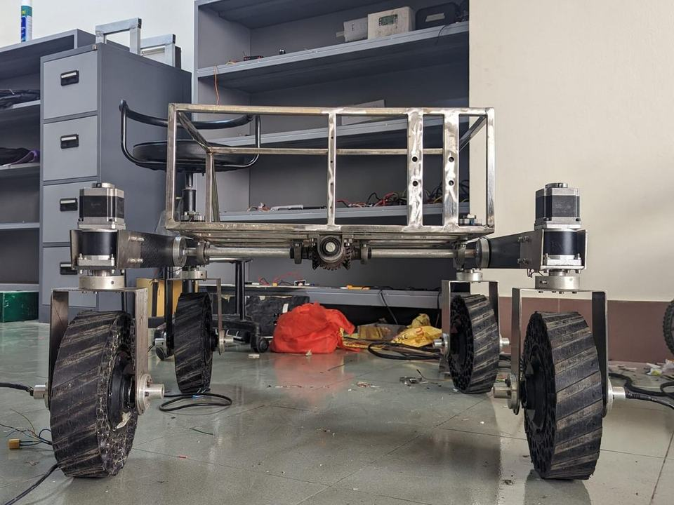
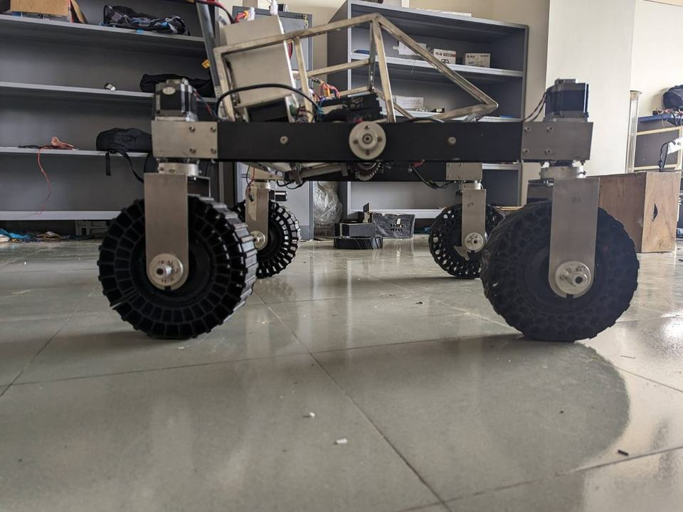
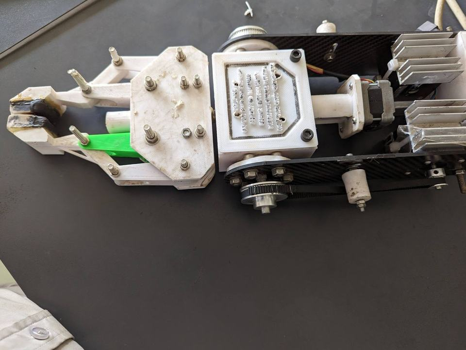

Nov 2022 – Jul 2023
Chassis & Wheel System
- Steerable wheel subsystem with stepper motor and thrust bearings for precise manoeuvring.
- 3D-printed honeycomb non-pneumatic tyres in TPU for better shock absorption.
Hands-on builds and simulation studies. The rover subsystems were designed and manufactured for PHOENIX 3.0, MIST Mongol Barota’s entry to the Anatolian Rover Challenge 2023.

Nov 2022 – Jul 2023

Nov 2022 – Jul 2023

Nov 2022 – Jul 2023
2025